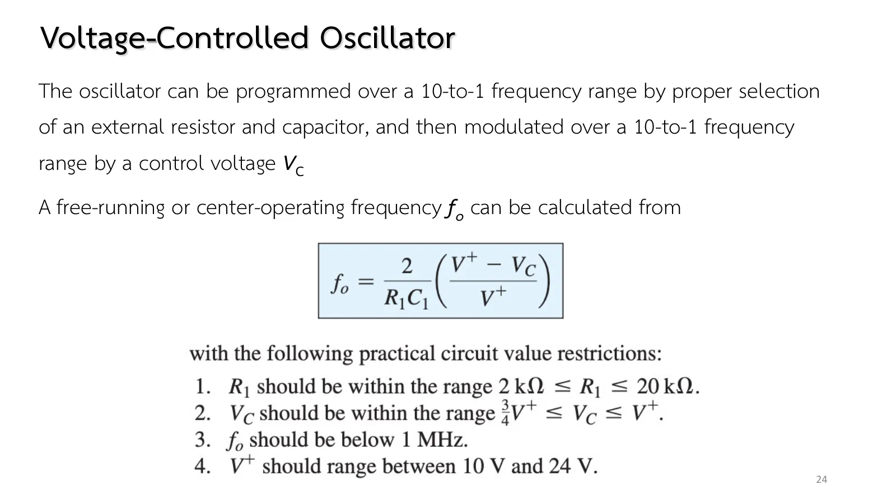
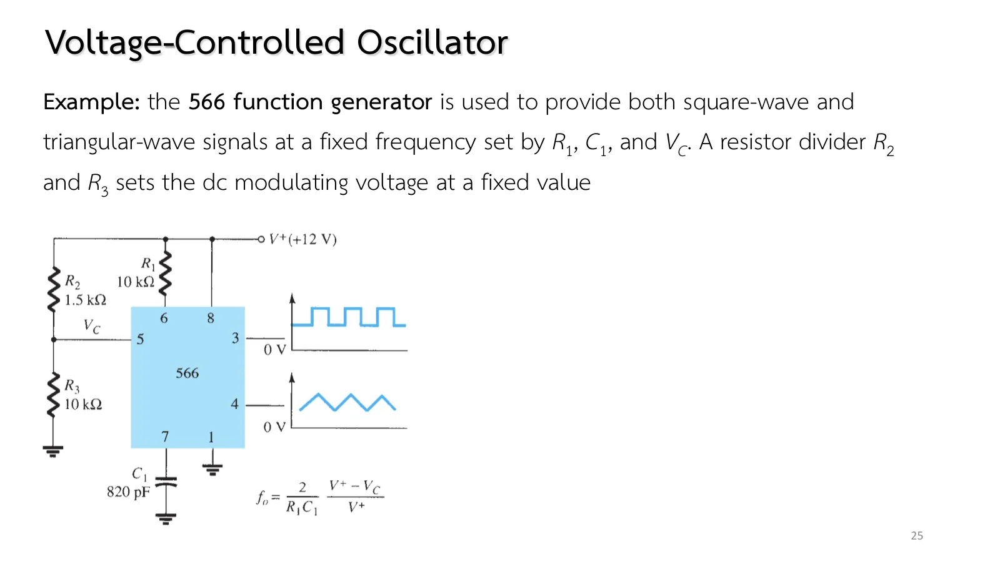
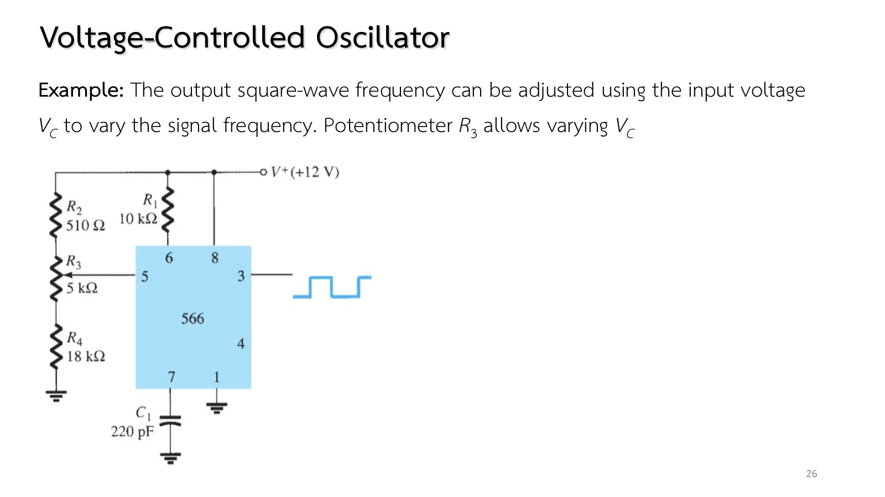

A siren that sweeps up and down, the signal generator on a lab bench and the phase-locked loop (PLL) in a radio receiver all need the same thing: an oscillator whose frequency is turned by a dc voltage instead of by changing a resistor or a capacitor. That is the voltage-controlled oscillator (VCO). This page opens the 566 IC to see how a control voltage becomes a current and the current a frequency, then uses it as a fixed-frequency generator and as one with a tuning knob (chapter 8 slides, pp. 23–26; Boylestad section 13.5).
Structure (p. 23, Fig. 13.21): a pair of current sources, a Schmitt trigger and two buffers. Pin 6 takes \(R_1\) from \(V^+\), pin 5 takes \(V_C\), pin 7 takes \(C_1\), pin 3 gives the square wave, pin 4 the triangle.
Why the frequency depends on \(V_C\): inside, pin 6 sits at \(V_C\), so the current in \(R_1\) is \((V^+ - V_C)/R_1\); it is mirrored to charge and discharge \(C_1\) between two levels \(V^+/4\) apart: half a period = \(C_1(V^+/4)/I\), which gives Eq. 13.8. \(V_C\) near \(V^+\) → little current → a low frequency.
Limits (p. 24): \(R_1\) 2–20 kΩ, \(V_C\) between 0.75\(V^+\) and \(V^+\), \(f_o\) < 1 MHz, \(V^+\) 10–24 V. A 10-to-1 range from \(R_1C_1\) and another 10-to-1 from \(V_C\).
Examples: Fig. 13.22 (p. 25): \(V_C\) = 10.4 V from 1.5 kΩ/10 kΩ, \(R_1\) = 10 kΩ, \(C_1\) = 820 pF → 32.5 kHz · Fig. 13.23 (p. 26): a 5 kΩ potentiometer moves \(V_C\) from 11.74 to 9.19 V → 19.7 to 212.9 kHz · Fig. 13.24 (book): a 1.4 V peak \(V_{in}\) about \(V_C\) = 10.4 V frequency-modulates over 10 to 1.
The simulation: the ±I current source and \(C_1\) are real parts; the Schmitt trigger switches between time steps at 0.375\(V^+\) and 0.625\(V^+\) (\(V^+/4\) apart, as the equation requires). The measured frequency matches the formula within 0.5 %.
ตอนที่ 1 · แรงดันกลายเป็นความถี่
Part 1 · A voltage becomes a frequency
ข้างใน 566: แหล่งกระแสกับชมิตต์ทริกเกอร์
Inside the 566: current sources and a Schmitt trigger
Slide p. 23 shows current sources inside the 566 that charge and discharge the external capacitor \(C_1\) with a constant current \((V^+ - V_C)/R_1\), so the voltage on \(C_1\) rises and falls in straight lines: a triangle wave at pin 4. A Schmitt trigger reverses the current whenever that voltage touches one of two levels, and gives a square wave at pin 3.
The closer \(V_C\) at pin 5 comes to \(V^+\), the smaller the current, the slower \(C_1\) charges and the lower the frequency. Equation 13.8 on slide p. 24 puts it in one line, with limits to check every time: \(2\ \text{k}\Omega \le R_1 \le 20\ \text{k}\Omega\), \(0.75V^+ \le V_C \le V^+\), \(f_o\) below 1 MHz and \(V^+\) between 10 and 24 V.
สไลด์หน้า 23: โครงสร้างและขาของ 566 (รูป 13.21)Slide p. 23: the 566's structure and pins (Fig. 13.21)

สไลด์หน้า 24: สมการ 13.8 และข้อจำกัดSlide p. 24: Eq. 13.8 and the limits
Inside the 566 pin 6 sits at \(V_C\): the simulation places a hidden source at pin 6 so that the current in \(R_1\) is right, and sets the Schmitt trigger levels at 0.375\(V^+\)/0.625\(V^+\) (the book does not state them, only their consequence, Eq. 13.8).
Set \(V^+\), \(R_1\), \(C_1\) and \(V_C\) (kept within 0.75\(V^+\) to \(V^+\)). The lower left graph is \(f_o\) against \(V_C\) from Eq. 13.8 (a falling straight line) with the point measured in the simulation; the lower right shows the triangle on \(C_1\) and the square output. Hover over \(R_1\): the current \((V^+ - V_C)/R_1\) is the very current that charges \(C_1\). Lower \(V_C\): the triangle steepens and the frequency rises.
Slide p. 25 uses the 566 as a generator giving both square and triangle waves. A divider of \(R_2\) = 1.5 kΩ and \(R_3\) = 10 kΩ on the 12 V supply holds \(V_C\) fixed. Before using Eq. 13.8, check that \(V_C\) lies in the allowed range, then guess whether the frequency will be tens or hundreds of kilohertz.

สไลด์หน้า 25: ตัวอย่างรูป 13.22Slide p. 25: the example of Fig. 13.22
The slides give no solutions: pp. 25–26 are the two worked examples of the book's §13.5 (pp. 737–738). The book rounds the \(V_C\) of Fig. 13.22 to 10.4 V (the full value is 10.43 V) and so gets 32.5 kHz; the full value gives 31.8 kHz, which the simulation measures.
Slide p. 26 replaces the fixed divider with a potentiometer \(R_3\) = 5 kΩ, with \(R_2\) = 510 Ω above it and \(R_4\) = 18 kΩ below. Turn the knob, \(V_C\) moves, and the frequency follows.
The two resistors around it are not decoration: \(R_4\) keeps \(V_C\) from falling below \(0.75V^+\), and \(R_2\) keeps it from reaching \(V^+\), where the frequency would drop to zero. Find the lowest and highest frequencies the two ends of the knob give.

สไลด์หน้า 26: ตัวอย่างรูป 13.23Slide p. 26: the example of Fig. 13.23
Move \(V_C\) from \(V^+\) down to 0.75\(V^+\): the frequency climbs linearly from zero to \(0.5/R_1C_1\). That is the book's 10-to-1 modulation range (from 0.025 to 0.25 of \(V^+\)).
Set \(R_1\) = 20 kΩ, then 2 kΩ: a 10-fold change in frequency at the same \(V_C\): the range from \(R_1\), within limit 1.
Push \(f_o\) past 1 MHz (a small \(C_1\), a low \(V_C\)): the panel warns that limit 3 is exceeded; the simulation still runs but a real chip is not guaranteed to.
Try this 2 — problems 1–2
Problem 1: hover over \(C_1\) while the triangle rises: +156.5 µA; while it falls: −156.5 µA, exactly the magnitude of the current in \(R_1\).
Problem 2: with the wiper at the bottom \(V_C\) = 9.19 V is only just above 9 V (0.75\(V^+\)). Cut \(R_4\) to 15 kΩ: \(V_C\) = 8.78 V, below the limit; the formula says 244 kHz but the chip may not follow.